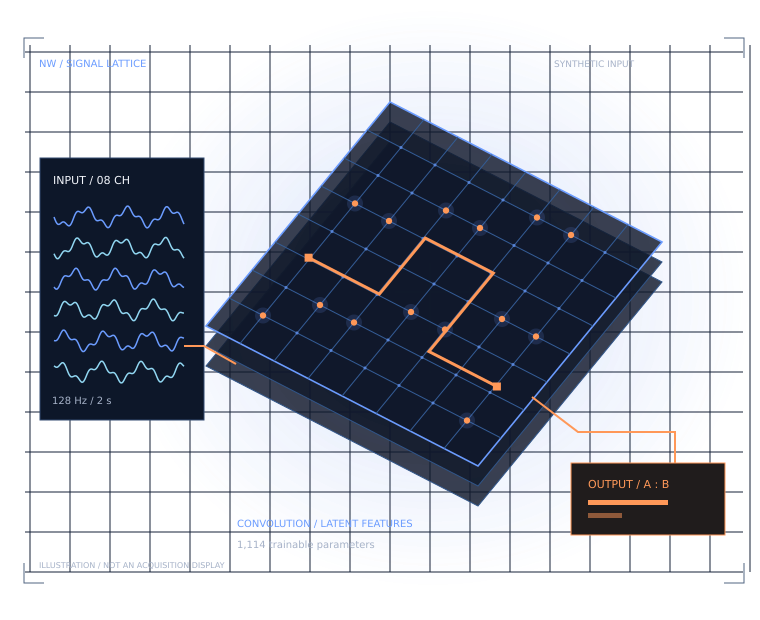

01 / SIGNAL QUALITY
Compare conditions.
Controlled artificial conditions make signal characteristics inspectable. Explicit amplitude and flat-channel checks identify unusable input windows.
NW / 001 SIGNAL & INTERACTION EXPERIMENTS
Inspect the waveform. Challenge the model. Record the interaction. An independent research console connecting EEG decoding with cognitive task design.

01 / SIGNAL CONSOLE
Replay artificial conditions, inject an artefact,
and see when the decoder abstains.
Hann periodogram · channel average · µV²/Hz
QUALITY GATE
DECODER / TEMPORAL CNN
REFERENCE / SPECTRAL
MODEL SPECIFICATION
Learned filters, ReLU, temporal pooling and a two-class head.
Demo quality thresholds are engineering checks, not validated EEG acquisition criteria. Conditions A/B are artificial frequency patterns, not attention, intention, recovery or diagnosis.
02 / INTERACTION BENCH
Two controlled tasks. Eight trials per run.
Pointer, touch or keyboard input.
Memorise the symbol buffer, then reproduce its order on the response pads.
8 trials / self-paced response / pause or finish at any point.
Exports contain your local game interactions, settings and demo signal observations. No names or contact information are requested.
| Trial | Buffer | Outcome | Duration | Input |
|---|---|---|---|---|
| No completed trials in the ledger. | ||||
03 / RESEARCH RECORD
Signal processing, implementation decisions
and the limits of the evidence.
01 / SIGNAL QUALITY
Controlled artificial conditions make signal characteristics inspectable. Explicit amplitude and flat-channel checks identify unusable input windows.
02 / MODEL EVALUATION
A trainable temporal CNN and a fitted spectral baseline are evaluated on held-out virtual subjects, with independent Python and JavaScript inference checks.
03 / INTERACTION DESIGN
Movement and cognition meet in games with adjustable targets, deliberate pacing and an inspectable session log. Co-design and user studies are the proposed next step.
BENCHMARK RECORD / SYNTHETIC ONLY
12 training · 3 validation · 3 test. Synthetic data only. Model selection uses validation loss; the final test set contains 96 artificial windows.
synthetic balanced accuracy
CNN and baseline
A perfect result on a deliberately separable synthetic task demonstrates pipeline operation, not real-world EEG performance. The dataset is artificial, imported signals are not classified, and clinical validity has not been established.